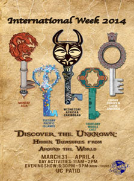
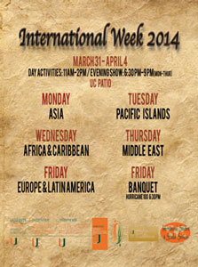
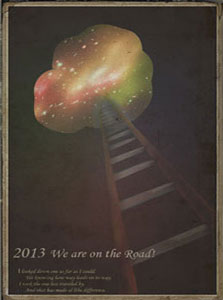
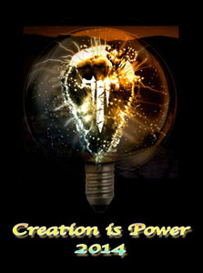

Introducing the Oreos on the teenagers' new stage of relationships. I want to show how young people such as college students enjoy sharing their Oreo cookies with their first love. Oreo wants to be positioned as the cookie that all teenagers must have while having fun with friends or partners. Kraft Food Inc. wants to reaffirm that Oreo is the most loved cookie in the world, but by the teenagers especially. OREO - PR EVENT VIDEO
Project-2: International Week


International Week is the oldest and most famous tradition of COISO. This week-long fun and educational celebration provides international students with an opportunity to share their culture with the University of Miami community.
COISO invited me as a contributing designer to design posters, palm cards, T-shirts for International Week 2014.
Project-3: New Year Poster


I design a poster for myself at the beginning of each year. It encourages me to move on. Also it is my goal of each year.